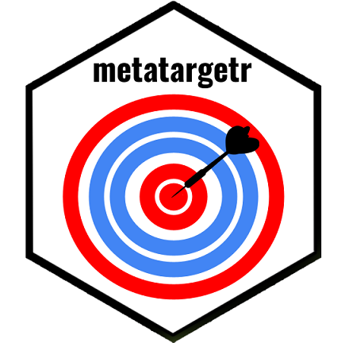

Fabio Votta is een post-doctoraal onderzoek aan de Universiteit van Amsterdam, die onderzoek doet naar het wereldwijd gebruik van digitale selectiecriteria voor politieke advertenties.
Methodologie
In samenwerking met Who Targets Me, surveilleerden wij 1470 politieke adverteerders om beter zicht te krijgen op hoe campagnes verschillende selectiemethodes gebruiken die door Meta worden aangeboden. Hiervoor gebruikten we data uit de Meta Ad Library. We maakten gebruik van de nieuwe ‘Audience (Doelpubliek)’ data, die meer uitleg geeft over de wijze waarop pagina’s hun advertenties richten op een specifiek doelpubliek. .
Om meer inzicht te krijgen in de verkiezingen focusten we ons op adverteerders die:
-
<<<<<<< HEAD
- Advertenties plaatsten in de laatste 7 dagen (19 mei - 25 mei 2024)
- Advertenties plaatsten in de laatste 30 dagen (26 apr - 25 mei 2024) =======
- Advertenties plaatsten in de laatste 7 dagen (19 May - 25 May 2024)
- Advertenties plaatsten in de laatste 30 dagen (26 Apr - 25 May 2024) >>>>>>> 24cc5476a9ee910b59f730ec619c9d31d80f464e
Note
Meta geeft in hun Ad Libary enkel toegang tot data over adverteerders van de afgelopen 7, 30 en 90 dagen. Meta’s data loopt ook steeds enkele dagen achter. Onze informatie wordt steeds bijgewerkt als nieuwe data voorhanden is.
Waarschuwing
Dit dashboard baseert zich op de data van de door het platform aangeboden ‘ad library (advertentie bibliotheek).’ Er is echter onderzoek dat aantoont dat deze bibliotheken niet altijd volledig zijn (Edelson et al. 2020; Silva et al. 2020). Wij kunnen dus niet garanderen dat dit dashboard een totaal overzicht biedt van alle advertenties of selectiecriteria.
Over de maker van het dashboard
| |
|
|

Meer weten over hoe politieke partijen zich tot u richten? Registreer u op Who Targets Me en download de gratis plugin voor uw browser om te zien hoe partijen uw data gebruik op Facebook.

Wil u zelf de selectiecriteria in de Facebook Ad Library onderzoek? Dit dashboard wordt ondersteund door het R paket: metatargetr. Meer informatie is hier te vinden:
Verkiezingsdoelgroep Dashboards
Een lijst van verkiezingsdashboards:
- 🇳🇱 2021 Nederlandse parlementsverkiezingen (15-17 maart 2021)
- 🇩🇪 2021 Duitse federale verkiezingen (26 september 2021)
- 🇸🇪 2022 Zweedse algemene verkiezingen (11 september 2022)
- 🇺🇸 2022 Amerikaanse tussentijdse verkiezingen (8 november 2022)
- 🇺🇸 2022 Amerikaanse tussentijdse verkiezingen - Georgia Runoff (6 december 2022)
- 🇮🇹 2023 Lazio & Lombardije regionale verkiezingen (12-13 februari 2023)
- 🇪🇪 2023 Estse parlementsverkiezingen (5 maart 2023)
- 🇳🇱 2023 Nederlandse provinciale verkiezingen (15 maart 2023)
- 🇲🇪 2023 Montenegrijnse presidentsverkiezingen (19 maart 2023) - 1e ronde
- 🇦🇺 2023 Verkiezingen van de staat New South Wales (25 maart 2023)
- 🇫🇮 2023 Finse parlementsverkiezingen (2 april 2023)
- 🇹🇷 2023 Turkse algemene verkiezingen (14 mei 2023) - Ronde 1
- 🇩🇪 2023 Bremen staatsverkiezingen (14 mei 2023)
- 🇬🇷 2023 Griekse wetgevende verkiezingen (21 mei 2023)
- 🇹🇷 2023 Turkse presidentsverkiezingen (14 mei 2023) - Ronde 2
- 🇲🇪 2023 Montenegrijnse parlementsverkiezingen (11 juni 2023)
- 🇬🇷 2e 2023 Griekse wetgevende verkiezingen (25 mei 2023)
- 🇸🇰 2023 Slowaakse parlementsverkiezingen (30 september 2023)
- 🇩🇪 2023 Beierse staatsverkiezingen (8 oktober 2023)
- 🇩🇪 2023 Hessische staatsverkiezingen (8 oktober 2023)
- 🇳🇿 2023 Nieuw-Zeelandse algemene verkiezingen (14 oktober 2023)
- 🇵🇱 2023 Poolse parlementsverkiezingen (15 oktober 2023)
- 🇺🇸 Amerikaanse presidentiële voorverkiezingen (2023-2024)